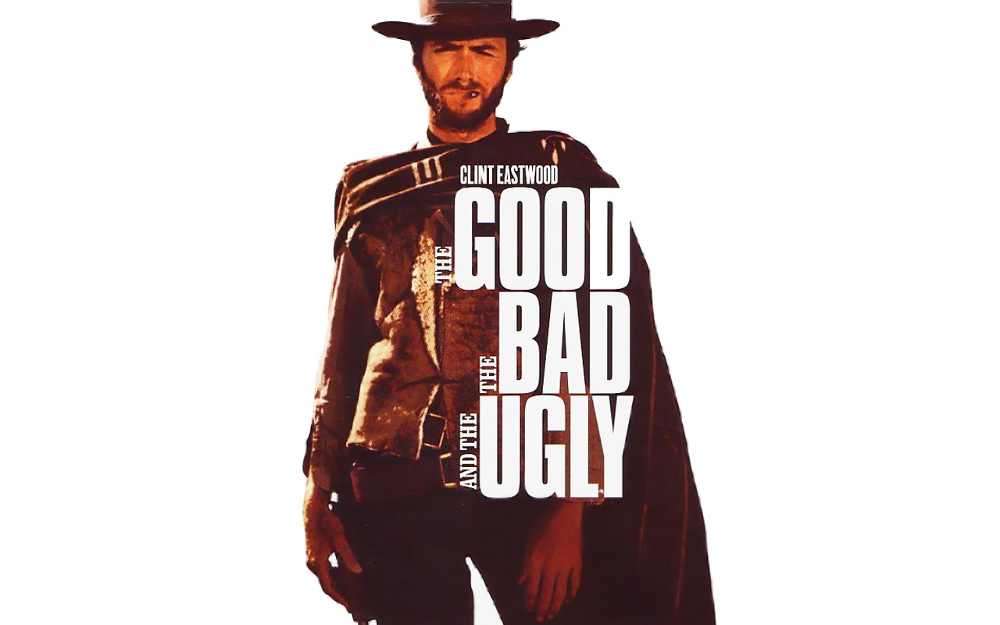
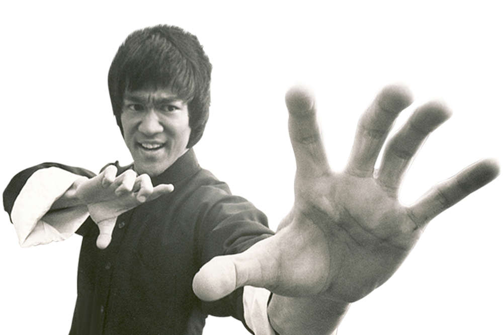
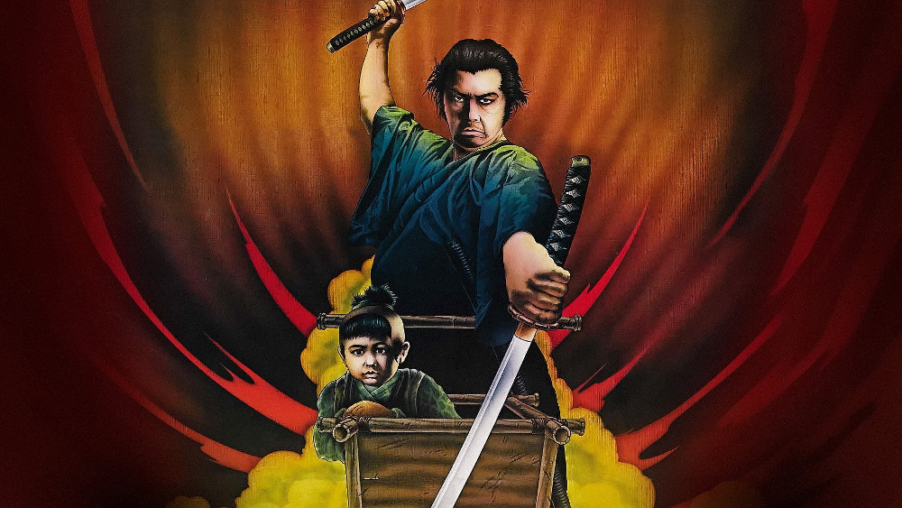

Inspirations
Quentin Tarantino l'a toujours reconnu, et fut surtout critiqué pour cela, il s’inspire énormément (voir trop) des autres films, genres cinématographiques pour ces films. On peut clairement lire ces inspirations dans ses films, ce qui leur renforce leurs côtés décomplexés, l’un de leurs nombreux atouts, mais fait aussi passer Tarantino pour un kleptomane du cinéma.
Tarantino, pour ses films, ses histoires, ses univers, s’est beaucoup inspiré des Westerns Spaghettis et de la culture japonaise de l’époque féodale, voire asiatique en général sur cette période. Ainsi, sur les 8 films qu’il a réalisé et écrit lui-même, deux sont des westerns (Django Unchained et The Hateful Eight, prévu pour fin 2015). Mais les autres ne sont pas en reste : Vincent et Jules, les deux protagonistes de Pulp Fiction, ressemblent plus à des cow-boys qu’à des gangsters, et l’univers de Kill Bill se rapproche grandement des Westerns, dans cette optique de vengeance, de tension et de chasse humaine sur de très longues distances. La musique de ses deux opus rappelle elle aussi cette culture, avec des sonorités très “country”, comme le son métallique des guitares des cow-boys. Dans Pulp Fiction, on y découvre aussi l’amour de Tarantino pour les samurais, lors de la scène finale de The Gold Watch, lorsque Butch entre en fascination devant un sabre de samurai. Cet intérêt est largement développé lors de Kill Bill, avec tous ces combats au sabre, ce code du samurai, et ce passage du premier volume en format dessin animé basé sur les “animes”, les versions animées des mangas japonnais.
De manière générale, Quentin Tarantino puise dans son immense culture cinématographique et ses films regorgent de références, ou en sont elles mêmes. Ainsi Django Unchained est un hommage au cinéma de Sergio Leonne, particuièrement à Le Bon, la Brute et le Truand (le titre “The Angel, the Bad and the Wise” fut même envisagé), et Reservoir Dogs à Battle Royale de Kinji Fukasaku. Il puise aussi largement dans les codes des différents genres du cinéma, selon le domaine du film qu’il va réaliser. Il puise donc dans le western spaghetti et dans le film de kung-fu ou de samurai, mais aussi dans le film de guerre, pour Inglourious Basterds, dans le film de gangsters, pour Reservoir Dogs et Pulp Fiction. Cette immensité de ses sources d’inspirations donnent à son style une patte unique, car très diversifiée.
En effet, il est difficile de caractériser et définir le style de Quentin Tarantino, même si on peut en retenir certains éléments. Une violence stylisée, placée au premier plan, parfois surjouée, afin de ne pas placer le spectateur comme un homme avide de sang, mais comme quelqu’un qui rit devant une violence absurde. Les dialogues ont une place aussi très importante chez Tarantino, supplantant parfois l’action physique par des joutes verbales pas moins intenses. Il aime aussi faire de ses personnages des personnes peu communes, qui vivent dans des situations peu communes, et réalisent des actions peu communes, mais qui se considèrent au contraire comme des personnes communes vivant une vie commune et ne faisant rien qui sort de l’ordinaire.
Nous pouvons aussi parler de la manière d’écrire de Tarantino. Il aime avoir une narration plutôt déstructurée, avec des flashbacks (qu’il appelle chapitres) afin de raconter l’histoire des personnages sans les introduire dans des dialogues qui en deviendrait lourds. Il raconte l’histoire selon le prisme du cinéma, prenant des libertés historiques que lui permet le cinéma, comme la mort d’Hitler dans Inglourious Basterds.
Quentin Tarantino, 2014, Projet de l'IUT Paris Descartes réalisé par S. Fouquet, François Mercier, Kévin Harismendy et Justin Rerolle.